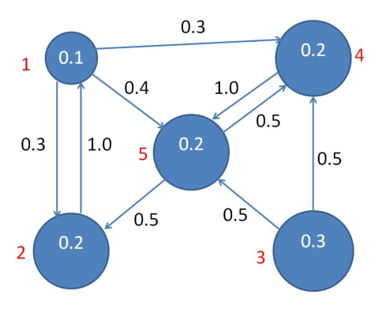
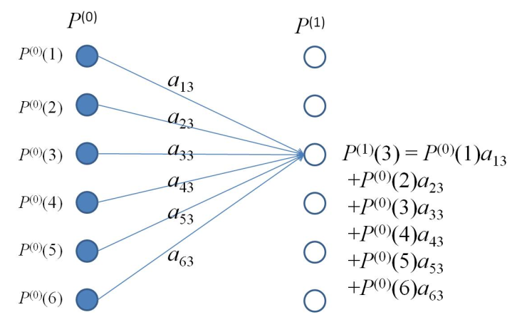

Previously, we have only had one metric for whether a document d is a good fit for a query q, that was sim(q,d). However in cases of huge document corpuses, there may be too may values of d for which sim(q,d) is large.
One assumption that must be broken to tackle this problem is that all documents are equal, they are not. Wikipedia is more likely to answer your query than one's personal web page.
Note: Page Rank is named after Google's Larry Page not web page
We assign a prior probability P(d) to each document d in our corpus. We can think of P(d) as the probability that d is relevant to qbefore the user creates query q.
Whether d is returned in response to query q depends on sim(q,d) and P(d). We treat P(d) as the Page Rank of d
Cases where document retrieval is based solely on sim(q,d) we effectively assume P(d) to be the same ∀d. This case is referred to as equal priors
Constructing Priors
We can change our relevance assumption to be that the relevance of any document ot a query is related to how often that document is accessed.
Such as comparing academic papers by their citation index. This is an example of a self-evaluating group whereby each member evaluates all other group members.
Definition of a Markov Model
A N-state Markov Model consists of:
A set of N states {σ1,…,σN}
An initial state probability distribution
P0=⎣⎢⎢⎢⎢⎡P0(1)P0(2)⋮P0(N)⎦⎥⎥⎥⎥⎤
where P0(n) is the probability that the model starts in state n and ∑n=1NP0(n)=1
A N×N state transition probability matrix, A, where aij is the probability of a transition from state i to state j at time t
From the initial state probability distribution and the state transition matrix, you can draw a Transition Diagram such as:

State probability distribution at time t
The state probability distribution at time t=0 is P0, similarly, at time t=1 the PD is P1.
What happens at time Pt in general and what happens as t→∞
In order to calculate th state probability distribution at time 1, you must calculate and sum the probability of being at each state given a previous (or starting) state. The starting state could be any state. Diagrammatically this can be seen:

In matrix form this can be written:
P1=ATP0
and more generally,
Pt=ATPt−1=ATATPt−2=⋯=(AT)tP0
Suppose that Pt→P as t→∞ or the probability distribution plateaus over time, then:
P=ATP
or, P is an eigenvector of AT with an eigenvalue of 1
Analysis
Interestingly, we can encode an 'exit' state into our initial state probability distribution, by definining an initial spd as :
P0=⎣⎢⎢⎢⎡0.60.20.20⎦⎥⎥⎥⎤
with a corresponding transition matrix. Our state probability distribution will converge to:
Pt→∞⎣⎢⎢⎢⎡0001⎦⎥⎥⎥⎤
Convergence
Do our state probability distributions always converge as t→∞? not
Conditions for convergence of Markov Processes
Note not expected to be known
The model must be irreducible, i.e. for every pair of states s0,s1 there must be a time t and a state sequence x1,x2,…,xt with s0=x1,s1=xt and P(x1,x2,…,xt)>0. Essentially, it is possible to get from state s0 to s1 via the state sequence x1,x2,…,xt with a non-zero probability.
The model must be aperiodic, a state is aperiodic if the HCF of the set of return times for the state must be 1. A model is aperiodic if all of its states are aperiodic.
Simplified Page Rank
Given a set of documents D={d1,…,dN} we define:
pa(n) as the set of pages pointing to dn
hn as the number f hyperlinks from dn
With this the simplified Page rank xn for document dn is given by:
xn=dm∈pa(n)∑hmxm
As this equation is recursive we instead write:
xni+1=dm∈pa(n)∑hmxm(i)
We can formulate this in matrix form:
Let W be the N×N matrix whose (m,n)th entry is given by:
wm,n={hn10if there is a hyperlink from xn to xmotherwise
Let xi be the N×1 column vector whose nth entry is xin then:
xi+1=Wxi
We can therefore define: Wxi=⎣⎢⎢⎢⎢⎡h110⋮h11h21h21⋮h210h31⋮h31……⋮…hn1hn1⋮hn1……⋮…hN1hN1⋮hN1⎦⎥⎥⎥⎥⎤⋅⎣⎢⎢⎢⎢⎢⎢⎡x1ix2ix3i⋮xNi⎦⎥⎥⎥⎥⎥⎥⎤
Simplified Page Rank: Markov model interpretation
We can implement Simplified Page Rank using a Markov model where:
P0=x0 A=WT
I.e. P0 is the initial estimate of Page Rank, W is the transpose of the state transition probability matrix A
A=wT means that Pt=WPt−1
"Damping Factor"
To this point all authority xn of a page dn comes from the pages that have hyperlinks to it. I.e. a page with no hyperlinks to it will have an authority of 0. This breaks with the first requirement for Markov convergence, irreducibility.
To solve this problem, we introduce a damping factord∈R,0<d<1. Where d os the proportion of authority that a page gets by default.
Our simplified Page rank equation now becomes:
xi+1=(1−d)Wxi+N(d)1N
Where 1N=⎣⎢⎢⎢⎢⎡11⋮1⎦⎥⎥⎥⎥⎤ is a N×1 column vector of 1s
Convergence
x=(1−d)Wx+Nd1N
is a system of N equations with N unknowns. We can re-write this as a dynamic system:
xt+1=(1−d)Wxt+Nd1N
When considered in this way we can see that it converges for any initial condition x0 to a unique fixed point x∗ s.t.
x∗=(1−d)Wx∗+Nd1N
Dangling Pages
A page which contains no hyperlinks to other pages is referred to as a dangling page as in a tree-based representation they form the leaf nodes.
If dn is a dangling page the the nth column of W consists of entirely 0s. ∴ the sum of the nth column sums to 0 and W is no longer a column stochastic matrix. Cases such as these can break some of our earlier analysis.
One solution to dangling pages is to introduce a dummy page dN+1 and add a link to dN+1 to every previously dangling page.
We then extend our transition matrix to get a new (N+1)×(N+1) matrix W and create a new dangling page indicatorr={r1,r2,…,rN} where:
rn={10if dn is a dangling pageotherwise
We add r as the bottom row of W and add an additional column of N 0s followed by a single 1 so that our new transition matrix Wˉ becomes:
With this new transition matrix our page rank equation becomes:
x=(1−d)(W+V)x+Nd1N
Probabilistic Interpretation of Page Rank
We can essentially think of each page as a state in a Markov model or a node in a graph. Each note or state is connected via a hyperlink structure. Each Connection between a node p and q is weighted by the probability of its usage. These weights depend only on the current node, not on the path to it; this is a property of Markov decision chains.